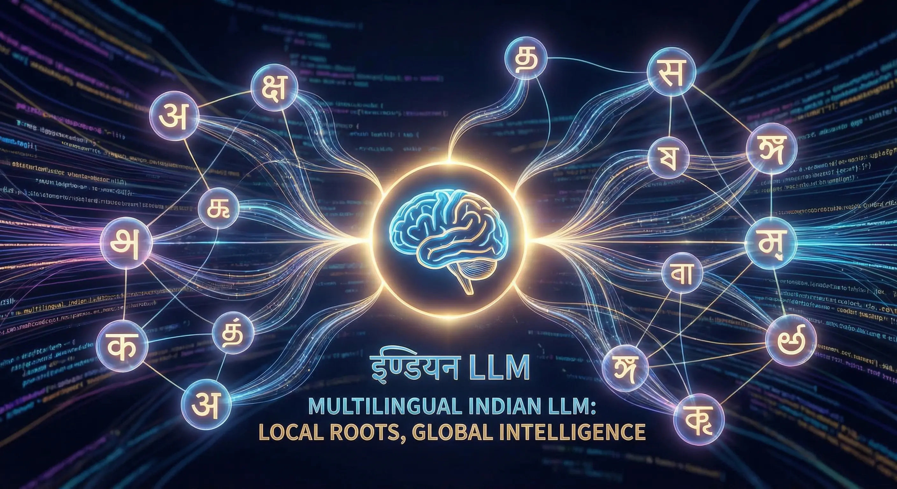
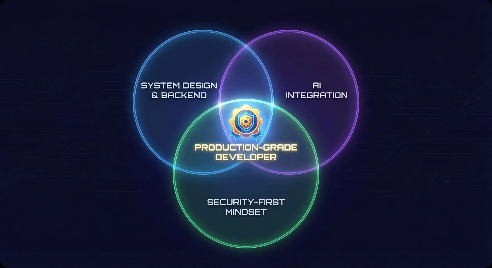

India is no longer just consuming AI — it is actively trying to shape the global AI landscape.
The India AI Impact Summit 2026 made one thing clear: the next wave of innovation in India will be deeply tied to AI infrastructure, developer ecosystems, and real-world deployment — not just research papers and chatbot demos.
For student developers, this shift matters more than most people realize.
Table of Contents
- The Bigger Signal Behind the Summit
- India’s Push Toward Sovereign AI
- The Rise of India’s Indigenous LLM Efforts
- India’s Emerging AI Startup Wave
- AI Is Converging with Full-Stack Development
- The Hype vs Reality Gap
- The Real Risks of Rapid AI Adoption
- Skills That Will Actually Matter
- Where Student Developers Have the Real Opportunity
- What This Means for My Own Roadmap
- Where India’s AI Ecosystem Is Heading
- Challenges India Must Still Solve
- Final Thoughts
🚀 The Bigger Signal Behind the Summit
Events like the India AI Impact Summit are not just conferences — they are directional signals. Three macro trends stood out:
- India is investing heavily in sovereign AI capabilities.
- AI is moving from experimentation to deployment.
- The focus is shifting toward practical, scalable systems.
This is important because it changes what skills will actually matter in the next 3–5 years.
🇮🇳 India’s Push Toward Sovereign AI
One of the most important undercurrents of the India AI Impact Summit 2026 is the country's clear push toward sovereign AI capabilities. Instead of relying entirely on foreign models and infrastructure, India is actively investing in domestic AI ecosystems.
This push includes:
- Government-backed AI compute infrastructure
- Semiconductor manufacturing initiatives (India Semiconductor Mission) to secure the hardware supply chain
- Support for Indian language AI models
- Public–private partnerships in AI research
- Funding for indigenous foundation model startups
The message is clear: India does not want to be just an AI consumer — it wants to be an AI builder.
🧠 The Rise of India’s Indigenous LLM Efforts
Another major signal from the summit is the growing momentum around building large language models within India. Several startups and research groups are working to develop models optimized for Indian languages, local datasets, and regional use cases.
Notable examples include Sarvam AI and Krutrim (Ola's AI venture), which are focused on building foundational AI models tailored for India’s linguistic and enterprise needs. Efforts like these highlight an important shift — the focus is moving from simply consuming global LLM APIs to developing domestic AI capabilities.
This matters because India presents unique challenges:
- Highly multilingual population
- Low-resource language datasets
- Large-scale public digital infrastructure
- Cost-sensitive deployment environments
Models optimized for Western datasets often underperform in these conditions. Indigenous LLM development aims to close that gap.

🚀 India’s Emerging AI Startup Wave
Beyond large tech players, India is also seeing a rapid rise in AI-native startups building across the model, infrastructure, and application layers.
Alongside Sarvam AI, several Indian startups are gaining attention for their work in applied AI, developer tooling, and enterprise automation. Companies like Yellow.ai and Haptik have established global dominance in conversational AI, while newer players like Qure.ai are revolutionizing healthcare diagnostics with AI. This signals an important shift — India’s AI momentum is not confined to research labs but is increasingly driven by product-focused startups.
What makes the Indian AI startup wave particularly interesting is its focus on:
- Cost-efficient AI deployment
- Multilingual and Bharat-focused use cases
- Enterprise automation and productivity tools
- AI built for large-scale public digital infrastructure
If this trend continues, India could become one of the most important application-layer AI ecosystems globally.
🧠 AI Is Converging with Full-Stack Development
One of the clearest trends is that AI is no longer isolated inside research labs. It is being embedded into:
- Web applications
- Enterprise platforms
- Developer tools
- Cybersecurity systems
- SaaS products
This means the highest leverage developers will not be pure ML researchers alone — they will be full-stack engineers who can integrate AI into real products. For students like us, this is a massive opportunity.
⚠️ The Hype vs Reality Gap
Let’s be honest — a lot of AI content online is pure noise. Things that are currently overrated:
- Blindly wrapping ChatGPT APIs
- Calling prompt engineering a “career”
- Cloning generic AI apps
- Building toy ML models with no deployment
These may look impressive on LinkedIn, but they don’t build durable engineering skill. Recruiters and engineering managers can spot a thin wrapper from a mile away. What the industry actually needs is much more grounded.
⚠️ The Real Risks of Rapid AI Adoption
While the momentum around AI is real, rapid adoption also introduces new classes of risk that developers must take seriously.
- Prompt injection attacks: AI systems can be manipulated through carefully crafted inputs.
- Data leakage: Improper handling of context windows can expose sensitive information.
- Hallucinations: Large language models can generate confident but incorrect outputs.
- Over-automation risk: Blind trust in AI outputs can create silent failure modes in production systems.
As AI becomes infrastructure, building with a security-first and verification-first mindset will become a key differentiator for developers.
🔧 Skills That Will Actually Matter
Based on current industry movement, the developers who will stand out in internship interviews and placements are those who combine AI awareness with strong fundamentals.
1. Backend and system design
AI features still need authentication, databases, scaling, APIs, and monitoring. Without this, AI apps remain demos.
2. Data handling and pipelines
Real AI systems depend heavily on clean data flows, preprocessing, storage strategy, and retrieval systems. Data engineering is quietly becoming a superpower.
3. Security awareness (often ignored)
AI systems introduce new risks: prompt injection, data leakage, model abuse, and API key exposure. Most beginner AI projects completely ignore this layer — which is exactly why security-minded developers will have an edge.
This security-first mindset is something I explored in depth while building Vaultary, particularly around authentication and defensive design.
4. ML literacy (not necessarily deep research)
You don’t need to become a PhD researcher. But you should understand how models behave, basic evaluation metrics, limitations of LLMs, and when AI should NOT be used. This prevents cargo-cult engineering.

💡 Where Student Developers Have the Real Opportunity
For students and early-career developers, the opportunity is not necessarily in training massive foundation models — that requires enormous compute and capital. The real leverage lies in building the application and infrastructure layer on top of emerging AI capabilities.
High-impact areas include:
- AI-powered SaaS products (even micro-SaaS for campus problems)
- Secure AI integrations in web platforms
- Retrieval-augmented generation (RAG) systems
- AI observability and monitoring tools
- Domain-specific AI applications for Indian markets
As India’s AI ecosystem matures, developers who understand both system design and AI integration will be in the strongest position.
Pro Tip: Don't just build a "Chat with PDF" app. Build a system that indexes your entire semester's notes, handles conflicting information, and cites sources. That is engineering.
The future is not AI vs Full-Stack vs Security — it is the convergence of all three into production-grade intelligent systems.
🧭 What This Means for My Own Roadmap
The summit reinforced something I’ve been gradually aligning toward: The future is not AI vs Full-Stack vs Security. It is the intersection of all three.
My current focus areas reflect this:
- Building secure web systems (like Vaultary)
- Strengthening backend fundamentals
- Gradually integrating AI capabilities into real applications
- Maintaining a strong security mindset
The goal is to become a developer who can ship intelligent systems safely at scale, not just build isolated features.
🔮 Where India’s AI Ecosystem Is Heading
If current momentum continues, we will likely see:
- More AI-first startups emerging from India
- Stronger government-backed AI infrastructure
- Increased demand for applied AI engineers
- Tighter regulation around data and AI safety
- Deeper integration of AI into everyday software products
For students entering the field now, this is actually a very favorable timing window.
⚠️ Challenges India Must Still Solve
Despite strong momentum, India’s AI push still faces several structural challenges that will shape how fast the ecosystem matures.
- Compute availability: Training and serving large models requires massive GPU infrastructure.
- High-quality datasets: Many Indian languages remain low-resource.
- AI safety and regulation: Guardrails for responsible deployment are still evolving.
- Talent depth: There is strong developer supply, but fewer engineers experienced in large-scale ML systems.
How India addresses these gaps over the next few years will determine whether it becomes a true AI powerhouse or primarily an AI application hub.
🏁 Final Thoughts
The biggest takeaway from the India AI Impact Summit 2026 is simple: AI is becoming infrastructure, not a novelty.
The developers who win in this shift will not be the ones chasing every new tool — but the ones who build strong fundamentals and then layer AI intelligently on top.
For now, the smartest move is to stay grounded: build real systems, understand security, strengthen backend depth, and learn AI with intent, not hype. As students, we have the unique advantage of time to experiment and fail—use it to build something complex, not just something trendy. The wave is real — but only for builders who are prepared.
Note: This article was written with the assistance of AI tools. Some images used in this post are AI-generated.